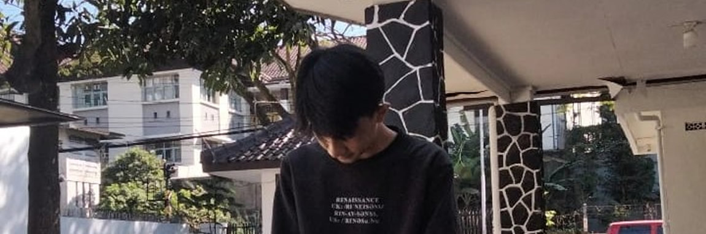

| Gaarfy | Home | Profile | Portofolio | Ask Me! |
Welcome to Giar's Page
Hai, nama saya Giar, dan ini adalah web yang saya buat. Saya lahir di Bandung, pada bulan november. Kesenangan saya adalah bermain basket, alasan saya kuliah di STMIK LIKMI adalah, kampus ini fokus pada jurusan teknologi dari tahun 1983 yang sesuai dengan keinginan saya yang menjuru ke bidang komputer, apalagi jaringan. Saya memiliki keahlian dalam konfigurasi jaringan, topologi jaringan, troubleshooting komputer, rakit komputer, dan yang berhubungan dengan hardware. Selain disebut keahlian, hal-hal tersebut adalah kesenangan saya juga, saya suka mengotak-atik komputer.
Rasa penasaran saya sangatlah tinggi dalam bermain hardware, maka dari itu saya memilih likmi agar bisa mengembangkan ilmu saya terhadap teknologi, khususnya pada bagian jaringan dan komputer. Saya berasal dari keluarga yang "mencukupi" maka dari itu saya semangat untuk menambah ilmu saya agar bisa berguna dimasa depan terhadap keluarga saya dan orang sekitar.
Selain itu saya juga sangat suka alam, hutan, gunung, dan yang paling saya suka adalah danau, tempat-tempat itu yang bisa membuat saya tenang dan damai. Apapun yang saya alami, seberat-beratnya masalah, saya suka meluapkannya dengan mendatangi tempat yang saya suka, dan meresapi masalah yang di-alami. Setelah itu saya selalu ter-motivasi dengan kata-kata yang saya buat sendiri.
 |
Everyone make mistakes, there's two choice. Surrender or be more strong.
-Giar Syahidan